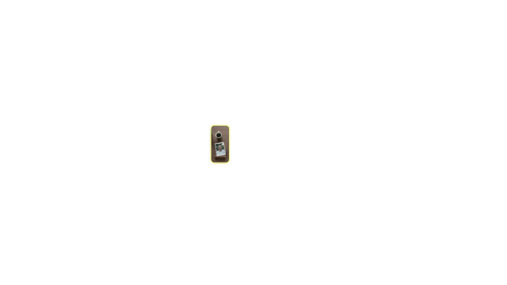

we find
your
story/
craft
the
vision/
expandpossibility

We are a creative storytelling studio that does one thing exceptionally well: find the story at the center of your work and produce it into cinematic video built for the feed era. We partner with brands, companies, and people building something real to turn meaningful work into visually and emotionally powerful story that resonates and connects.
We don't operate like a traditional production company. Intentionally. Our innovation lives in merging journalistic curiosity and cinematic craft with responsible AI in production execution. Our story-carving process is our moat, film is our medium, and AI a creative tool we bring in after the vision is set to remove the barriers that have always prevented extraordinary ideas from being told at the creative calibre they deserve.
Our method exists to make the kind of storytelling that raises hell a hell of a lot more accessible. More on that below.
This is our creative laboratory, where craft and innovation aren't in tension, they're integrated. Our method blends journalism's curiosity and rigor with film's cinematic vision with future-forward tools.
A good story takes discipline. It takes taste. It takes knowing how to listen between the pauses, seeing the contradictions, finding what's wordless and making it speakable. That is not something we outsource to a machine; ai comes in after the story is found and the vision is set.
The innovative production tools we integrate shift and vary based on project and client needs. What never shifts is how we use them and the standard we hold across all our work: intentional, transparent, and always in service of the story.
That commitment is what drives our experimental method and allows us to close the gap between quality and access in premium storytelling and bring extraordinary visions to life without compromising on depth, care, or integrity.

This studio wasn't an idea. It was a conclusion after years of watching extraordinary stories get approved in concept and killed at the budget proposal. Great stories require craft, expertise, artistry, and talent in remarkable symbiosis — that's what makes them extraordinary, and what prices most people out of telling them well.
Then AI arrived and was supposed to change that. Instead, it flooded our screens with aesthetic noise at unprecedented speed. It didn't democratize storytelling. It democratized content.
fwd slash/studio exists in that gap — using innovative tools to bridge access to premium storytelling without sacrificing what makes it worth making.
The slash in our name isn't decoration. It holds opposites in the same breath: craft and innovation / tradition and technology / access and quality. In every URL it's how you navigate forward. In a fraction it's the ratio between two things. That tension is where the best stories live. It's where we work.